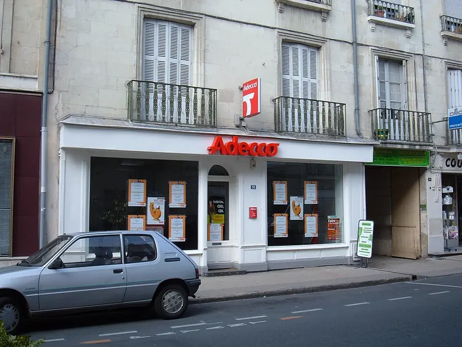

아데코 그룹 The Adecco Group
아데코 그룹(The Adecco Group)은 스위스 취리히에 본사를 둔 인력 서비스 기업이다. 임시 인력 파견, 정규직 알선, 전직 지원 등을 제공하는 세계 2위 규모의 인적자원 서비스 업체이다.
최종 업데이트
아데코 그룹은 어떤 브랜드인가
스위스와 프랑스에 뿌리를 둔 기업으로 취리히에 본사가 있다. 세계에서 두 번째로 큰 인적자원 서비스 및 임시 인력 공급 업체이다.
포천 글로벌 500 기업이며 SIX 스위스 거래소에 상장되어 있다. 사무, 산업, 기술, 금융, 법률 분야에서 임시 인력 파견, 정규직 알선, 전직 지원, 인재 개발을 제공하고, 업무 프로세스 아웃소싱과 컨설팅도 한다.
글로벌 사업부는 Adecco, Akkodis, LHH 세 곳이다. 운영 브랜드에는 Adecco, DIS AG, General Assembly, Innovation Foundation, LHH, Akkodis, Adia, Pontoon이 있다.
아데코 그룹은 어떻게 시작되고 성장했나
1997년 1월 1일, 1964년 리옹에서 Interecco라는 이름으로 설립된 프랑스 기업 Ecco와 1957년 로잔에서 Adia라는 이름으로 설립된 스위스 기업 Adia Interim이 합병하며 출범했다. 같은 해 9월 미국 매사추세츠주 케임브리지의 임시 인력 업체 TAD Resources International을 인수했다.
1999년 말 Olsten Staffing을 인수해 미국 최대 채용 기업이 되었다. 2009년에는 영국의 Spring Group을, 2010년에는 플로리다주 잭슨빌의 MPS Group을 인수했다.
2018년에는 Vettery와 General Assembly를 인수했다.
아데코 그룹의 브랜드 아이덴티티는 무엇인가
스위스 Adia Interim과 프랑스 Ecco의 합병으로 탄생한 세계 2위 인력 서비스 기업으로, Adecco, Akkodis, LHH 세 사업부 체제를 운영한다.
아데코 그룹의 대표 제품과 서비스는 무엇인가
제공 서비스는 임시 인력 파견, 정규직 알선, 전직 지원, 인재 개발이며 사무, 산업, 기술, 금융, 법률 분야를 다룬다. 업무 프로세스 아웃소싱과 컨설팅도 사업에 포함한다.
글로벌 사업부는 Adecco, Akkodis, LHH 세 곳이다. 운영 브랜드로는 Adecco, DIS AG, General Assembly, Innovation Foundation, LHH, Akkodis, Adia, Pontoon이 있다.
2018년에는 미국 교육 기술 업체 General Assembly를, 2021년 7월에는 프랑스 엔지니어링·기술 컨설팅 기업 Akka Technologies를 인수했다.
아데코 그룹은 지금 어떤 상태인가
2025년 기준 컨설턴트를 제외한 사내 상근 환산 직원은 34,000명이다. SIX 스위스 거래소에 상장되어 있다.
2015년 Alain Dehaze가 CEO가 되었고, 2022년 Denis Machuel이 그 뒤를 이어 CEO를 맡았다. 2025년 1월에는 Bullhorn과의 파트너십을 확대해 디지털 운영에 인공지능을 도입한다고 발표했다.
아데코 그룹 로고는 어떻게 변해왔나
사진으로 보는 아데코 그룹의 역사

자주 묻는 질문
아데코 그룹는 어느 나라 브랜드인가요?
아데코 그룹는 스위스의 브랜드·비즈니스 브랜드입니다.
아데코 그룹는 언제 설립되었나요?
아데코 그룹는 1997년 설립되었습니다.
아데코 그룹의 브랜드 아이덴티티는 무엇인가요?
스위스 Adia Interim과 프랑스 Ecco의 합병으로 탄생한 세계 2위 인력 서비스 기업으로, Adecco, Akkodis, LHH 세 사업부 체제를 운영한다.
아데코 그룹의 대표 제품은 무엇인가요?
제공 서비스는 임시 인력 파견, 정규직 알선, 전직 지원, 인재 개발이며 사무, 산업, 기술, 금융, 법률 분야를 다룬다.
아데코 그룹는 현재 어떤 상태인가요?
2025년 기준 컨설턴트를 제외한 사내 상근 환산 직원은 34,000명이다.
아데코 그룹의 본사는 어디에 있나요?
아데코 그룹의 본사는 취리히에 있습니다(위키데이터 기준).
아데코 그룹의 공식 웹사이트는 어디인가요?
아데코 그룹의 공식 웹사이트는 https://www.adeccogroup.com 입니다.
출처와 검증
아데코 그룹 관련 참고: 공식 웹사이트 · 위키데이터 Q353494 · 한국어 위키백과 · 영어 위키백과. 브랜드명은 한글과 원어를 함께 표기하되 데이터에 없는 표기는 만들지 않습니다. 기원 국가·설립연도는 검수된 정의문에서 확인된 값을 우선하고, 없을 때만 공식 웹사이트 URL이 일치하는 위키데이터 개체의 값을 씁니다. 탄생일의 월·일은 위키데이터, 위키백과 정보상자, 본문 가운데 같은 연월로 확인되는 값만 싣고, 출처끼리 다르면 싣지 않습니다. 위키데이터 값은 2026-11-12 기준입니다.